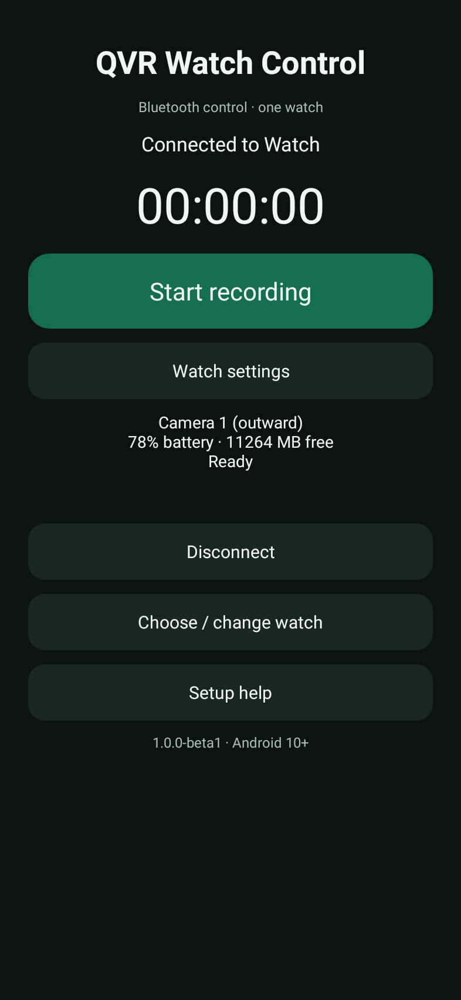
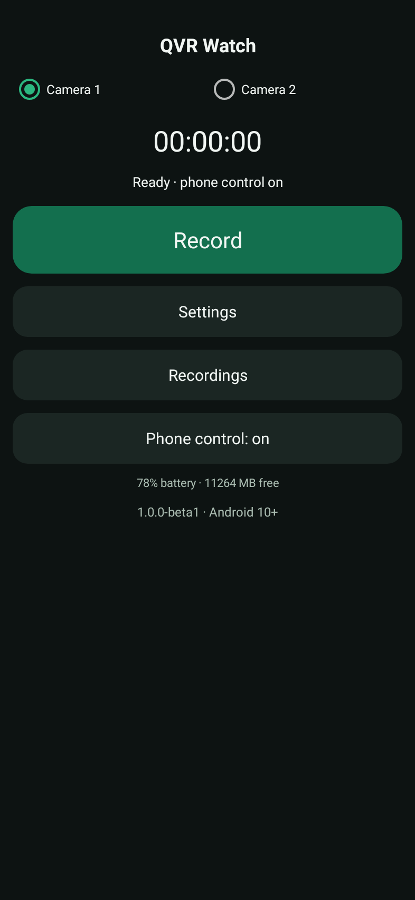
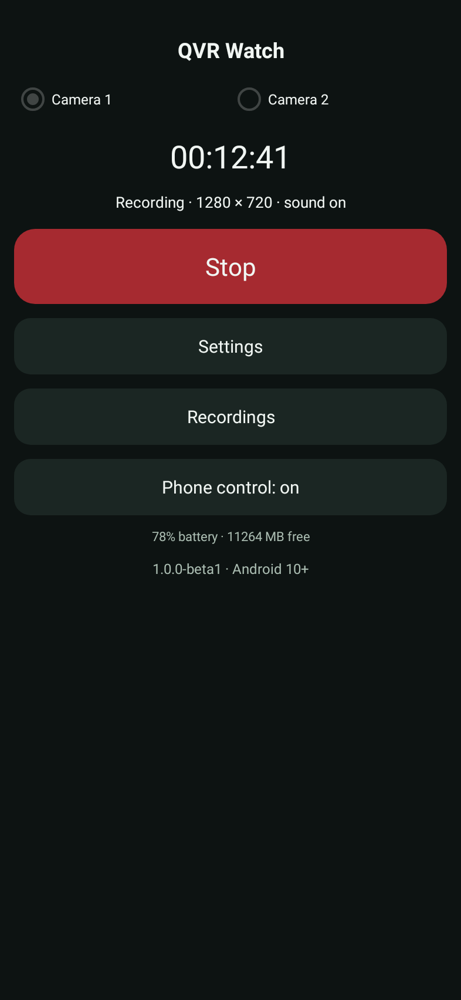
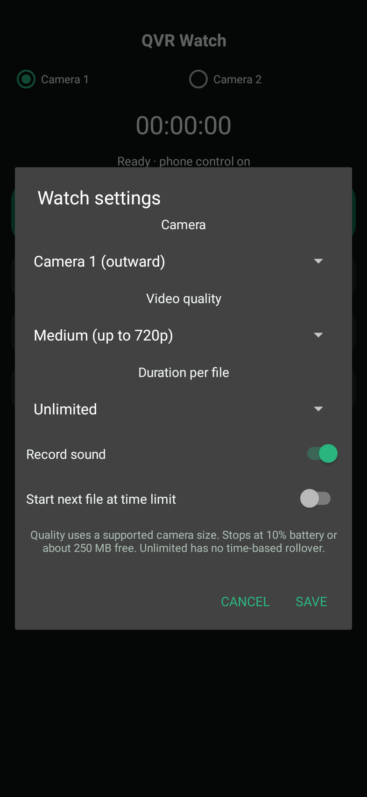
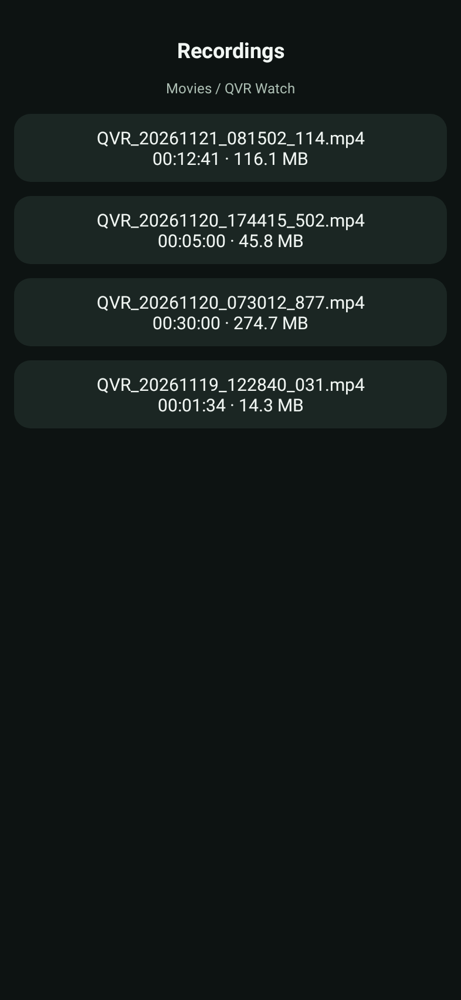
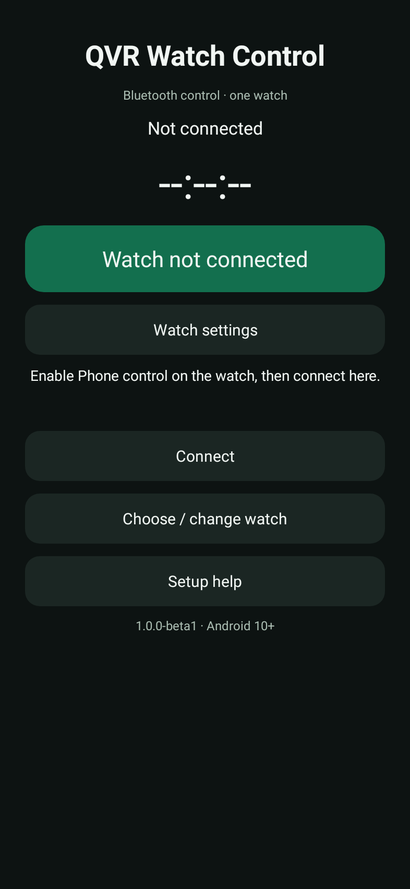
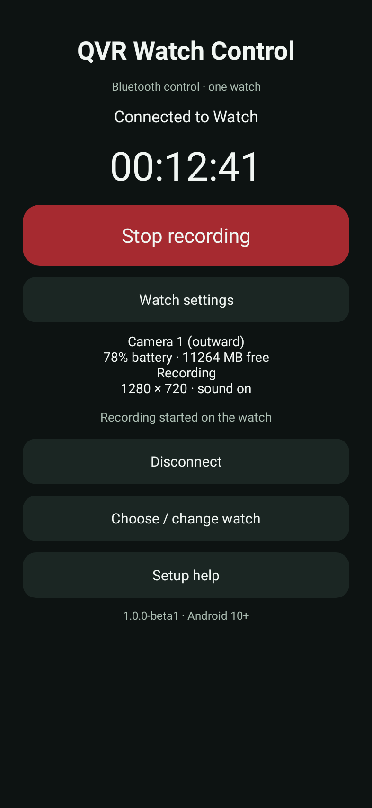
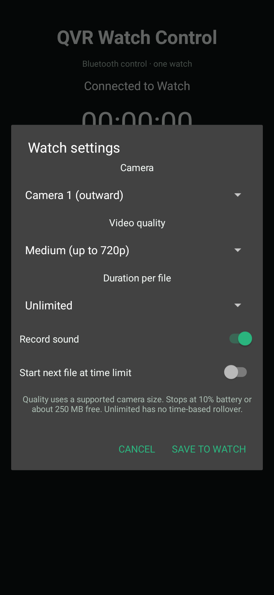

Your watch records. Your phone is the remote.
QVR Watch turns a full Android watch with a camera into a small video recorder. Record from the watch itself, or start and stop it from your phone with QVR Watch Control.
Videos are saved on the watch. Nothing goes over the internet, and nothing is uploaded anywhere.
Test build. This is a first test build. It has not yet been tried with a real watch and phone. It needs a full Android watch with a camera and Bluetooth Classic, not a Wear OS-only, Apple, Huawei or fitness watch.
Recording people is covered by the law. What the law says
- Version 1.0.0 beta 1
- Android 10 or later, Bluetooth Classic
- 41 KB, plus 29 KB for the phone
- Test build
Free, with nothing to unlock. No adverts, no account with the developer, no tracking. Compare or read the release notes.
Chrome may say the file might be harmful. It shows this for app files that do not come from Google Play. Choose Download anyway.

- Two small appsOne for the watch, one for the phone.
- No internetBluetooth between your own two devices only.
- No accountNothing to sign up for.
- No advertsNone in the apps and none on this site.
A look inside
These are the real screens of both apps, drawn from their own code with a made-up watch and recordings. The phone screens show QVR Watch Control; the others are the watch app shown at phone size. Swipe or scroll sideways to see them all.







How it works
Install one app on each device, pair them once, and the phone becomes the remote.
Install and pair
Put QVR Watch on the watch and QVR Watch Control on the phone, then pair them in Android's Bluetooth settings.
Allow phone control
On the watch, tap Phone control and choose your phone. Only that phone is accepted.
Record from the phone
Connect in QVR Watch Control and press Start recording. The watch keeps recording if Bluetooth drops.
Everything is in, and all of it is free
Nothing below is held back for a paid tier, because there is no paid tier.
On the watch
- One-tap recording
- Choose camera 1 or 2 and press Record.
- Quality
- Low, medium or high, matched to what the camera supports.
- File length
- Unlimited, or 1 to 60 minutes per file, with an optional next file.
- Looks after itself
- Stops and saves at 10% battery or when space runs low.
From the phone
- Start and stop
- Over Bluetooth, even with the watch screen off.
- Live status
- Recording time, camera, battery and free space.
- Settings from afar
- Change the watch's settings without touching it.
Your recordings
- Saved on the watch
- Ordinary video files in Movies/QVR Watch.
- Play or delete
- From the recordings list, with a confirmation before deleting.
Between your watch and your phone
No internet
Neither app asks for internet access.
One phone only
The watch accepts commands only from the phone you chose.
No ads, no tracking
Nothing in the apps or on this site.
Use it within the law
QVR apps record video and sound, and can keep recording with the screen off. Who and where you record, and what you do with the recordings, is your responsibility.
- UK GDPR and the Data Protection Act 2018. Recording identifiable people is processing their personal data. If you record beyond your own home and private life, data protection law is likely to apply to you. The Information Commissioner's Office has guidance at ico.org.uk.
- Protection from Harassment Act 1997. Using a camera to watch, follow or keep a record of someone can be harassment.
- Sexual Offences Act 2003, section 67 (voyeurism). Recording people in places where they expect privacy, such as a bathroom, a changing room or a bedroom, is a crime.
- Covert recording. Recording someone without their knowledge can break data protection law, workplace rules and the rules of the place you are in, and recordings made that way may not be accepted as evidence. If in doubt, tell people they are being recorded.
Laws differ in other countries. If you are not in the UK, the rules where you are apply. Read the terms of use.
Installing and updating
QVR Watch is not on Google Play, so your phone asks a couple of extra questions the first time.
Download the app file
Tap Download on your phone. The file is called QVR-Watch.apk and is about 41 KB, plus 29 KB for the phone. If Chrome says the file might be harmful, choose Download anyway. First tick the box to say you will use the app within the law.
Allow the install
Open the file. The first time, Android asks you to allow your browser to install apps. Allow it, go back and tap Install. If Google Play Protect steps in, choose More details, then Install anyway.
Updating later
QVR Watch tells you when a newer version is out. Install the new file over the old one and everything you have saved is kept.
Version 1.0.0 beta 1, released 21 November 2026. See the release notes, or check your download.
Questions
Which watches does it work on?
Full Android watches, Android 10 or later, that have a camera and Bluetooth Classic. It does not work on Wear OS-only, Apple, Huawei or fitness watches.
Is there a live view?
No. Neither app shows a picture while recording. That keeps the link small and the battery going longer.
Where are the videos?
On the watch, in Movies/QVR Watch. Copy them off with your watch's own file transfer or a USB cable. The phone app does not copy videos.
What if Bluetooth drops?
The watch keeps recording. The phone reconnects by itself and shows the real state again.
Is it free?
Yes. Both apps are free, with no adverts and nothing to unlock.
A recorder on your wrist
Free, with no adverts and nothing to unlock. Made by the developer of several other free Android apps: see them all.